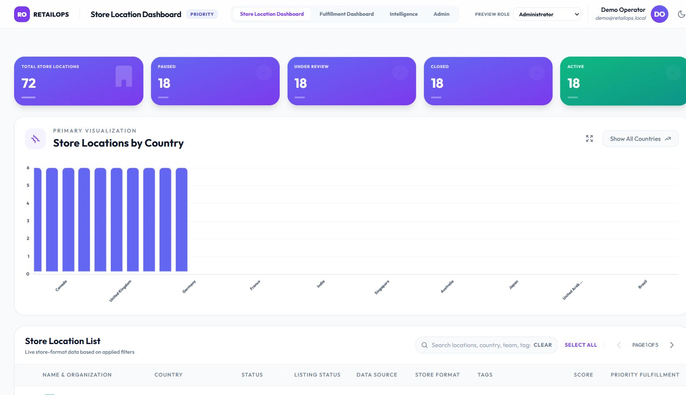

Filter the same set everywhere
Charts always summarize the complete filtered set, independently of the current table page.
Solo hackathon · AI-assisted prototype · live demo linked below
A prototype for helping staff find education partners that need attention, using filters, charts, and a searchable table instead of raw database records.

Open live dashboard ↗Live interactive demo
The link opens a separate live dashboard with sample retail operations data. The education partner project remains an independently built hackathon prototype.
View the live dashboard ↗The hackathon was an individual challenge: three people each built their own dashboard. I created mine independently, and it stood out to the CTO, who praised the design and shared it with other teams.
The dashboard let staff search and filter partners by country, status, publish status, data source, recruitment type, and related attributes. Charts summarized the matching records, while a paginated table supported review of individual partners.
The prototype gave the CRM team a concrete reference for filtering and dashboard capabilities they later implemented directly in the CRM.
How I approached it
I specified the architecture and the business calculations, then used AI to generate much of the code and reviewed and refined the result.
Charts always summarize the complete filtered set, independently of the current table page.
A base score plus tag weights creates a consistent relative signal to support partner review.
Country, status, publish status, and recruitment types each add a different view. A partner with multiple recruitment types can contribute to more than one chart category.
I designed the architecture and business rules, then reviewed and refined the AI-generated frontend and backend implementation. The page labels the work as a hackathon prototype.
Priority score: start at 1.0 and add matching tag weights: Express +0.5; Exclusivity +0.3; MarketingBudget +0.3; Priority +0.2; RussellGroup +0.2; AtRisk +0.1. The result is rounded to two decimal places. Tag matching ignores case; repeated tags count repeatedly. AtRisk increases this score in the current implementation.
Filtering: different filter fields combine with AND. Multiple data sources, recruitment types, or recruitment partners combine with OR within their field. Selected tags combine with AND, while charts summarize all matching records across table pages.
Architecture: HTML and vanilla JavaScript with Chart.js and Tailwind styling; Node.js, Express, and TypeScript APIs; MongoDB data normalized into an indexed in-memory store; Firebase sign-in and token verification; Jest and Supertest coverage configured.
Recognition and next step
The CTO’s response and the later CRM direction showed the value of making the idea tangible. The prototype gave the CRM team a clear reference for capabilities they later implemented in the CRM.